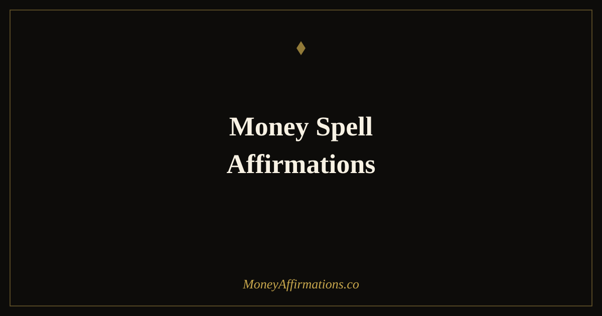

Money Spell Affirmations: 30 Powerful Statements to Attract Wealth

Language has always been understood as a form of power. Every tradition that has ever used spoken words to shift reality — from ancient incantations to modern cognitive therapy — is operating on the same insight: the words we speak with intention shape the world we experience. Money spell affirmations bring that insight into the specific domain of financial abundance, combining the psychological science of affirmation practice with the ritual gravity of intentional, ceremonial language.
These 30 money spell affirmations are designed to be spoken with presence, purpose, and conviction. They are not casual positivity — they are deliberate declarations about your financial reality and your relationship with abundance. Used as part of a consistent daily ritual, they work on the deep beliefs that shape every financial decision, every money conversation, and every opportunity you either seize or let pass by.
What are money spell affirmations?
Money spell affirmations are intentional, present-tense declarations about your financial reality, spoken with the full weight of your attention and belief. The word "spell" here refers not to supernatural magic but to the original meaning of the term: to spell something is to name it, to speak it into clarity. These affirmations name your financial reality as you intend it to be, creating the internal alignment from which that reality can grow.
The practice draws on both the rich tradition of intentional language — present across spiritual, philosophical, and healing traditions for thousands of years — and the contemporary neuroscience of self-affirmation, which shows that deliberate positive self-statements activate reward pathways, reduce stress responses, and increase openness to behaviour change. For a broader manifestation practice, the manifestation affirmations collection provides the complete framework.
30 money spell affirmations
- I call abundance into my life and it answers me with generosity and grace.
- Money flows to me freely, easily, and in amounts that exceed my expectations.
- I am a powerful magnet for wealth and every day I draw more of it toward me.
- I speak abundance into existence and the universe aligns with my declaration.
- My words carry intention, my intention creates reality, my reality is one of financial prosperity.
- I open myself fully to receiving money in all the forms it can take.
- I release every block, every doubt, and every old story that stood between me and abundance.
- Wealth recognises me as a worthy home and it settles in my life to stay.
- I am aligned with the energy of financial abundance and it finds me wherever I am.
- I declare that I am financially free and I take the actions that make it so.
- Money is drawn to my clarity, my purpose, and my willingness to receive it.
- I name my financial goals as already real, and I move through the world as if they are.
- Every word I speak about money is a word of power, pulling abundance toward me.
- I cancel every old spell of scarcity and replace it with an unshakeable belief in plenty.
- I am worthy of great wealth and I accept it with open hands and a grateful heart.
- The frequency of my thoughts about money is one of abundance, expectation, and ease.
- Unexpected income arrives in my life regularly because I have made myself ready for it.
- I speak wealth into my story and the evidence of that wealth grows around me every day.
- My financial life transforms because I transform the beliefs that create it.
- I call in the money I need for everything I desire and it comes to me in perfect timing.
- I am in sacred relationship with money — I honour it, I manage it well, and it multiplies for me.
- Abundance is not something I chase — it is something I embody, and it flows toward me naturally.
- I declare financial freedom as my reality and I build it one intentional decision at a time.
- My mind is clear, my heart is open, and money flows into my life without resistance.
- I am the source of my abundance — the universe simply delivers what I have already decided.
- I release fear around money and replace it with faith in my capacity to earn, save, and grow.
- Every financial blessing I receive is a confirmation that my declarations are working.
- I speak over my financial life with certainty: I am prosperous, I am provided for, I am free.
- I am a deliberate creator of my financial reality and I create it with intention every day.
- I call in the life I deserve — wealthy, free, purposeful — and I live as though it has already arrived.
How to use these affirmations
Money spell affirmations are most powerful when used with full ceremony and presence. Choose a quiet time — morning, ideally before your day begins — and create a brief ritual around the practice. Sit in stillness for two minutes first. Then select five to seven affirmations and speak each one aloud, slowly, with your complete attention on the words and their meaning. Do not rush. Let each statement settle before moving to the next.
Some people deepen this practice by writing the affirmations after speaking them, by lighting a candle, or by placing a hand on their heart while speaking. These additions are not necessary, but any ritual that increases your presence with the practice increases its effectiveness. The key variable in all of this is not the ritual itself but the quality of your intention. These affirmations spoken distractedly produce modest results. Spoken with full conviction and presence, they create a consistent internal signal that begins to reorganise both your beliefs and your behaviours around financial abundance.
Why ritual language changes your financial reality
The idea that spoken words shape material reality is as old as human culture. What contemporary neuroscience adds to this ancient understanding is a mechanism: intentional self-affirmation activates the brain's reward system, reduces activity in threat-detection regions, and increases cognitive flexibility — the mental openness that allows new beliefs to take root. When you speak a money spell affirmation with genuine conviction, you are not engaging in wishful thinking. You are performing a deliberate act of cognitive and emotional reorganisation.
The ritual context of money spell affirmations adds a further layer. When an action is performed with ceremony — with a designated time, a deliberate setting, and full conscious presence — the brain assigns it greater weight. It is encoded differently than a casual thought. This is why religious and cultural rituals have always used language ceremonially: it produces a depth of neurological impression that ordinary thought cannot match. Money spell affirmations leverage this effect for financial transformation, creating the identity and belief shifts that ordinary affirmation practice achieves more slowly and that wishful thinking never achieves at all.
Tips to make them work faster
- Speak them aloud in a quiet space with full presence. Silent reading does not produce the same neurological effect as spoken, intentional declaration. Voice your affirmations with conviction every time.
- Create a dedicated ritual space and time. The same location, the same time of day, the same brief preparation — these cues train your brain to enter a receptive state quickly, deepening the practice.
- Choose five and memorise them. Memorised affirmations can be spoken without reading, allowing you to close your eyes and be fully inside the words. This significantly increases their impact.
- Write one affirmation ten times after speaking it. The combination of speech and writing strengthens neural encoding. Spend one minute with a single statement that feels most relevant each day.
- Act as though the declaration is already true. After your practice, make one financial decision that is consistent with the identity you have just declared. Action seals the intention.
Frequently Asked Questions
What is the difference between a money spell affirmation and a regular money affirmation?
The difference is primarily in the intentional ritual framing. A money spell affirmation is used with deliberate ceremony — spoken aloud at a chosen time, with full attention and intention, often as part of a structured practice. The statement itself may be identical to a standard affirmation, but the ritual context — the lighting, the quiet, the deliberate choice to stop and speak with full presence — amplifies its psychological impact. The ritual creates a mental bookmark that separates this practice from ordinary thought, which increases the depth of the neural imprinting.
Do I need any tools or materials to use money spell affirmations?
No materials are required. The power of these affirmations lies entirely in your intention, your voice, and your consistency. Some people enhance the practice with candles, crystals, or a dedicated journal, and there is value in any ritual that deepens your presence with the practice. But these are additions, not requirements. The essential elements are a quiet space, full presence, and the willingness to speak the words as true statements rather than wishes.
How often should I use money spell affirmations for maximum effect?
Daily practice produces the most significant and lasting results. The most effective approach is a dedicated session each morning — seven to ten minutes of stillness, followed by five to seven spoken affirmations with full intention. Some people repeat this at night before sleep, when the mind is particularly receptive to suggestion and belief formation. Consistency over weeks and months is what transforms the practice from a pleasant ritual into a genuine shift in financial self-concept and behaviour.
Language is your most immediate tool for reshaping your financial reality. To build the complete manifestation practice that these affirmations support, explore the full manifestation affirmations collection and begin declaring the financial life you deserve.